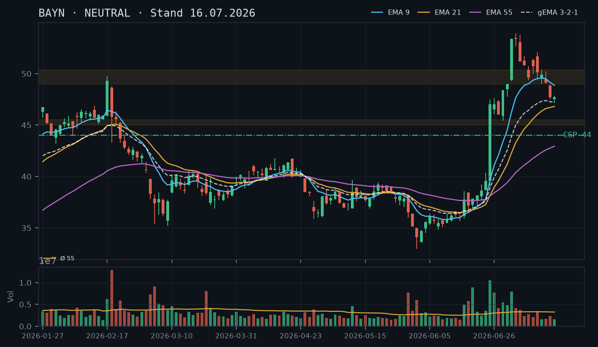
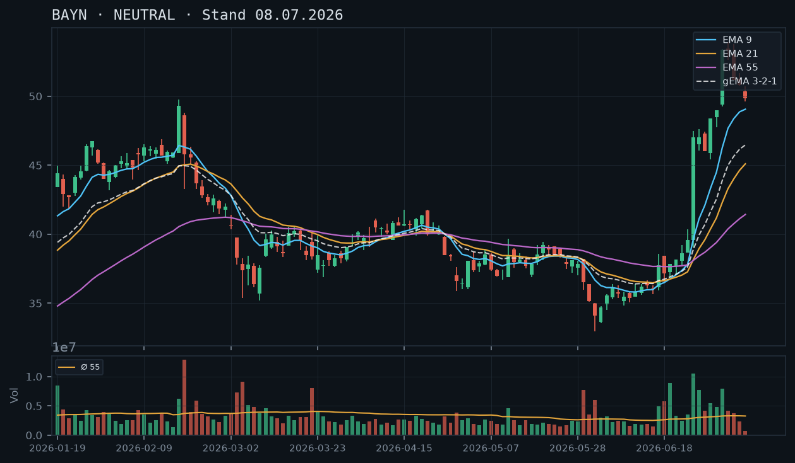

BAYN
Analyse-Historie · neueste zuerstBAYN stabilisiert sich nach der Korrektur vom ATH (53,92) oberhalb der Gap-Zone um 45,00–45,50 – kein klares direktionales Setup, aber ein defensiver CSP unterhalb der Konsolidierungszone bleibt konstruierbar, während ein CC mangels Aktienbestand und wegen offenem ATH-Potenzial nicht empfohlen wird.

1 · Trendstruktur
Der übergeordnete Trend bleibt bullisch: BAYN hat im explosiven Juni-Run (25.–30.06.) mit rel. Volumen von 3,25–3,61x den langjährigen Widerstandsbereich nach oben durchbrochen und ein Bewegungs-ATH bei 53,92 (03.07.) markiert. Seitdem läuft eine geordnete Korrektur in Form niedrigerer Hochs (53,92 → 52,08 → 50,36 → 48,90 → 48,49) und zuletzt stabilisierenden Tiefs (49,36 → 49,01 → 47,53 → 46,82). Der Schlusskurs am 17.07. bei 48,46 hält sich oberhalb der Gap-Zone 45,00–45,50, die als erste strukturelle Unterstützung gilt. Das Trendgefüge ist intakt, aber kurzfristig korrektiv.
2 · Candlestick-Formationen
Die letzte Kerze (17.07.) ist eine leichte Erholungskerze mit Schlusskurs 48,46 nach dem Tagestief bei 46,82 – eine Art Hammer mit unterem Docht, der leichte Kaufbereitschaft auf diesem Niveau signalisiert. Der Vortag (16.07.) schloss bei 47,72 auf einem niedrigen Niveau mit engem Body (Doji-Charakter), was Unentschlossenheit markiert. Bestätigung nach oben fehlt noch; ein Tagesschluss über 50,36 (letztes kurzfristiges Hoch vom 13.07.) würde das kurzfristige Bild aufhellen.
3 · EMA-Lage (9 / 21 / 55)
Die EMA-Struktur ist weiterhin bullisch sortiert: EMA9 (48,78) > EMA21 (46,96) > EMA55 (43,14), mit gema_321 bei 47,23. Der aktuelle Kurs (48,46) liegt knapp oberhalb von EMA9 und gema_321 – ein positives Zeichen, dass der kurzfristige Träger hält. Der EMA9 dreht jedoch leicht nach unten (von 49,59 am 13.07. auf 48,78 am 17.07.), was die laufende Korrektur bestätigt. Solange der Kurs über gema_321 (~47,23) und dem EMA21 (~46,96) notiert, ist die bullische EMA-Ordnung strukturell intakt.
4 · Trade-Setup
| Richtung | Kein Trade |
| Einstieg | Long nur bei Tagesschluss über 50,36 (letztes kurzfristiges Konsolidierungshoch vom 13.07., Stop-Buy). Alternativ: Stabilisierung über gema_321 ~47,23 mit bestätigender Folgekerze. |
| Stop | Unter 46,50 (Tagesschluss unter EMA21 und Gap-Zone-Oberkante 45,50 deutet Trendbruch an) |
| Ziel | 53,00 (erstes Ziel) – 53,92 (ATH der Bewegung) |
| CRV | ca. 2.0 : 1 (nur bei Bestätigung über 50,36) |
5 · Stillhalter (max. 12 Tage)
Die EMA-Struktur ist bullisch sortiert und der übergeordnete Impuls intakt – ein defensiver Cash-Secured Put tief unterhalb der aktuellen Konsolidierungszone bleibt das einzige sinnvolle Stillhalter-Geschäft. Ein Covered Call scheidet aus: Kein Aktienbestand vorhanden (IBKR-Snapshot bestätigt 0 Aktien), ein Naked Call wäre bei weiterhin offenem ATH-Potenzial (53,92 und darüber) nicht vertretbar. Der CSP-Strike aus der Voranalyse (44,00, Verfall 25.07.) ist noch nicht abgelaufen und behält seine Gültigkeit – ein neues Geschäft parallel dazu wäre nur bei deutlich veränderter Marktstruktur zu rechtfertigen.
| Geschäft | Cash-Secured Put |
| Strike | 44.0 |
| Puffer | 9.2 % |
| Zone | unterhalb Gap-Zone 45,00–45,50 (Kerzenboden 01. Juli / Gap-Oberkante 30. Juni) und aufsteigendem EMA55 bei 43,14 |
| Verfall bis | 2026-07-25 (6 Tage, nächster Standard-Freitag) |
| Begründung | Strike 44,00 liegt rund 7,4% unterhalb des aktuellen Schlusskurses (48,46 am 17.07.) und ca. 2,2% unterhalb der Gap-Oberkante bei ~45,00. Darunter läuft der aufsteigende EMA55 bei 43,14 als weiterer Puffer. Die Zone 45,00–45,50 wurde bisher noch nicht von unten getestet – sie bleibt ein 'unbestätigter Bereich', aber strukturell die logische erste Korrektur-Anlaufstelle. Der Puffer von ~9,2% zum Schlusskurs ist gegenüber der Voranalyse (7,8%) durch die Kurskorrektur sogar gewachsen, was das Geschäft attraktiver macht. Andienungsszenario: Ein Kauf bei 44,00 entspräche einem Niveau unterhalb der Gap-Unterkante der Ausbruchs-Folgekerzen und wäre fundamental sowie technisch als attraktiver Einstieg zu bewerten. In der Optionskette zu prüfen: ausreichende Prämie für den Puffer (Richtwert: mind. 0,30–0,40 EUR Mid bei diesem Strike), Delta idealerweise unter -0,20, Spread möglichst eng (unter 0,10 EUR). |
Bestand: Kein Aktienbestand in BAYN laut IBKR-Snapshot. Keine bestehenden Short-Optionen in diesem Titel. Falls der CSP vom 16.07. (Strike 44,00, Verfall 25.07.) bereits eröffnet wurde: Position ist nach aktuellem Kursstand (48,46) komfortabel im Puffer – kein Handlungsbedarf, halten bis Verfall. Sollte BAYN bis Mitte der Woche unter 46,50 (Tagesschluss) fallen, Optionskette auf Delta-Expansion prüfen; bei Delta unter -0,35 wäre ein frühzeitiges Schließen zu erwägen.
Ausführliche Analyse vom 19.07.2026 anzeigen
BAYN – Detailanalyse 19.07.2026
1. Trendstruktur
Der übergeordnete Trend ist bullisch und wurde durch den explosiven Juni-Run fundamental verändert. BAYN notierte noch am 02.06.2026 bei 34,10 EUR (rel. Volumen 2,18x) und hat seitdem ein Bewegungs-ATH bei 53,92 EUR am 03.07.2026 erreicht – ein Anstieg von rund 58% in weniger als fünf Wochen. Die Schlüsselkerzen waren:
- 25.06.: Close 47,00, rel. Volumen 3,61x – Ausbruchstag mit Volumen-Explosion
- 26.06.: Close 47,00, rel. Volumen 2,55x – Bestätigung des Ausbruchs
- 02.07.: Close 53,36, rel. Volumen 2,44x – Continuation-Kerze zum ATH
Die anschließende Korrektur zeigt eine klassische Struktur fallender Hochs: 53,92 → 52,08 (10.07.) → 50,36 (13.07.) → 48,90 (15.07.) → 48,49 (17.07.). Die Tiefs stabilisieren sich zuletzt: 49,01 (13./14.07.) → 46,82 (17.07. Tagestief). Das Tagestief 46,82 am 17.07. ist der erste Test unterhalb des EMA9 intraday – der Tagesschluss bei 48,46 erholt sich jedoch wieder über EMA9 (48,78) und gema_321 (47,23). Schlüssellevels:
- Support 1: 46,82–47,53 (Bereich der jüngsten Tiefs, noch unbestätigter Bereich – erst zweifach getestet)
- Support 2: 45,00–45,50 (Gap-Zone / Kerzenboden 01.07., unbestätigt von unten)
- Support 3: EMA55 bei 43,14 (aufsteigend, starker dynamischer Support)
- Widerstand 1: 50,36 (kurzfristiges Hoch 13.07.)
- Widerstand 2: 52,08–53,92 (ATH-Zone der Bewegung)
2. Candlestick-Formationen
Die letzte Kerze (17.07., Freitag) verdient besondere Aufmerksamkeit: Open 47,57, Tief 46,82, Hoch 48,49, Close 48,46. Das entspricht einem Hammer-ähnlichen Muster mit unterem Docht (~0,75 EUR) und bullischem Close nahe dem Hoch. Das Tagestief 46,82 unterschreitet erstmals kurzzeitig die Zone 47,14 (Tief vom 16.07.), findet aber sofort Käufer. In Kombination mit dem Doji-Charakter des Vortags (16.07., Open 47,53, Close 47,72) entsteht ein mögliches Zweier-Umkehrmuster – allerdings fehlt die Bestätigungskerze. Für eine valide Umkehr ist ein Tagesschluss über 50,36 (Hoch 13.07.) notwendig.
Die Kerzen seit dem ATH zeigen eine geordnete, nicht panikhafte Korrektur: Kein einzelner Tag mit Volumen über 1,0x (Ausnahme: 15.07. mit 0,73x – erhöht aber nicht außergewöhnlich). Das spricht für technische Konsolidierung nach einem Überschuss-Move, nicht für eine fundamentale Trendwende.
3. EMA-Analyse
Die EMA-Konstellation ist weiterhin bullisch sortiert: EMA9 (48,78) > EMA21 (46,96) > EMA55 (43,14). Der gema_321 bei 47,23 liegt knapp unter dem aktuellen Kurs. Die Abstände sind gesund: EMA9 zu EMA55 ca. 5,64 EUR – kein Kompressionsartefakt, klare Aufwärtstrend-Konstellation. Kritisch zu beobachten: Der EMA9 dreht seit 13.07. leicht nach unten (49,59 → 49,50 → 49,14 → 48,86 → 48,78), was die kurzfristige Schwäche quantifiziert. Solange EMA21 (aktuell 46,96, steigend) hält, bleibt die mittelfristige Trendstruktur intakt.
4. Trade-Setups (Direktional)
Setup A – Long-Breakout (bevorzugt):
- Einstieg: Stop-Buy über 50,36 (Tagesschluss oder Intraday-Ausbruch mit Volumen)
- Stop: 46,50 (Tagesschluss unter EMA21 und Gap-Zone)
- Ziel 1: 52,00 (CRV ca. 1,4:1)
- Ziel 2: 53,92 ATH (CRV ca. 1,9:1)
Setup B – Long auf EMA21-Bounce:
- Einstieg: Bestätigungskerze über EMA21 (~47,00) nach erneutem Test, idealerweise mit Volumen > 1,0x
- Stop: Tagesschluss unter 46,00
- Ziel 1: 50,36 (CRV ca. 1,6:1)
- Ziel 2: 53,92 (CRV ca. 3,2:1)
Setup C – Short (nicht empfohlen): Tagesschluss unter 46,50 und EMA21 würde das kurzfristige Bild eintrüben. Target wäre die Gap-Zone 45,00–45,50. Angesichts der übergeordnet bullischen EMA-Struktur und dem fehlenden Volumen auf der Abwärtsseite wird kein direktionaler Short präferiert.
5. Stillhalter-Analyse (Schwerpunkt)
Voranalysen-Abgleich: Die Analyse vom 16.07.2026 empfahl einen CSP Strike 44,00 mit Verfall 25.07. – dieser Strike ist nach aktuellem Stand (17.07. Close 48,46) komfortabel im Puffer. Der Kurs ist seit der Empfehlung leicht gefallen (Analyse-Basis war ca. 47,xx EUR), der prozentuale Puffer hat sich von 7,8% auf rechnerisch ~9,2% zum Freitags-Schlusskurs ausgeweitet. Die Empfehlung aus der Voranalyse wird bestätigt.
CSP Strike 44,00 – Zonen-Herleitung:
- Gap-Zone 45,00–45,50: Entstand durch den Ausbruchstag 30.06. (Low 45,41) und die Folgekerze 01.07. (Open 48,50, impliziertes Gap). Erster struktureller Support unterhalb der Konsolidierungsrange. Noch nicht von unten getestet = unbestätigter Bereich.
- Strike 44,00 liegt ~2,2% unterhalb der Gap-Oberkante (45,00) und ~0,86 EUR unterhalb der Gap-Unterkante (~44,86, approximiert). Der Strike hat die gesamte Gap-Zone als Puffer vor sich.
- EMA55 bei 43,14 (aufsteigend, täglich ca. +0,10–0,15 EUR): Zum Verfallstermin 25.07. dürfte EMA55 bei ~43,90–44,10 liegen – direkt unter dem Strike. Doppelte Unterstützung.
Andienungsszenario Strike 44,00: Ein Kauf bei 44,00 EUR entspräche einem Niveau knapp unterhalb der Gap-Unterkante des Ausbruchs-Moves vom 30.06./01.07. Fundamental wäre das nach dem rechtlichen Catalyst-Ereignis, das den Run ausgelöst hat, ein attraktives Einstiegsniveau mit substanziellem Aufwärtspotenzial (ATH 53,92 = ~22% Abstand). Andienung wäre akzeptabel.
Roll-Trigger: Sollte BAYN bis Mittwoch, 22.07., unter 46,50 (Tagesschluss) fallen und das Delta des laufenden Puts auf -0,35 oder tiefer expandieren, ist ein Schließen der Position zu erwägen. Ein Rollen nach unten (z.B. Strike 42,00 oder 43,00, Verfall nächster Freitag 01.08.) ist nur sinnvoll, wenn die Prämien-Situation einen echten Zeitwertgewinn ermöglicht – kein mechanisches Rollen unter Verlust des strukturellen Vorteils.
CC – Nicht konstruierbar: Der IBKR-Snapshot bestätigt 0 Aktien BAYN im Bestand. Ein Covered Call scheidet damit aus. Ein Naked Call wäre bei offenem ATH-Potenzial (53,92 noch nicht final getestet, übergeordnet bullische Struktur) ein inakzeptables Risiko-Profil. Kein CC-Setup.
Optionskette – Prüfpunkte für den Anwender:
- Prämie Mid-Kurs Strike 44 Put, Verfall 25.07.: Richtwert-Erwartung 0,25–0,45 EUR (abhängig von IV nach Kurskorrektur – IV dürfte seit Ausbruch noch erhöht sein)
- Delta-Zielbereich: -0,15 bis -0,22
- Spread: unter 0,10 EUR für akzeptable Liquidität bei BAYN-Optionen
- Open Interest: mindestens 100 Kontrakte am Strike für ausreichende Handelbarkeit
BAYN konsolidiert nach dem explosiven Juni-Run unterhalb des Allzeithochs der Bewegung (53,92) und zeigt erste Schwäche – kein klares direktionales Setup, aber ein defensiver CSP unterhalb der Konsolidierungszone ist konstruierbar.

1 · Trendstruktur
BAYN hat seit dem Ausbruch am 25. Juni 2026 (Tageskerze +19%, rel. Volumen 3,61x) eine massive Aufwärtsbewegung von ~35 auf 53,92 (Hoch vom 03.07.) vollzogen. Seitdem läuft eine mehrtägige Konsolidierung mit fallenden Hochs (53,92 → 52,08 → 50,36 → 50,24 → 48,90) und tendenziell fallenden Tiefs (52,64 → 49,48 → 49,01 → 49,01 → 47,53 → 47,14). Das ist eine klare Abfolge tieferer Hochs und tieferer Tiefs im kurzfristigen Bild – technisch ein kurzfristiger Abwärtstrend innerhalb des übergeordneten Aufwärtsimpulses. Der Schlusskurs heute bei 47,72 befindet sich bereits unterhalb der vorherigen Konsolidierungszone 49,00–50,00. Erstes unbestätigtes Support-Niveau: ~47,00–47,50 (Tagestiefs 15./16. Juli). Darunter wäre der Bereich 45,00–45,50 (Gap-Oberkante vom 30. Juni / Kerze 01. Juli) relevant.
2 · Candlestick-Formationen
Die letzten drei Kerzen zeigen eine klare Distributionsstruktur: 15. Juli – Bearish-Kerze mit tieferem Tief (47,53) und schwachem Close (47,71), Körper im unteren Bereich der Range; 16. Juli – erneut tieferes Tief (47,14) und nahezu unveränderter Close (47,72), Doji-artiger Charakter mit langem unteren Schatten, was kurzfristig Kaufinteresse andeutet, aber keinen bullischen Reversal-Beleg liefert. Die Kerze vom 14. Juli (Inside-Day-Charakter, Close 49,12) war bereits ein erster Schwächeindikator. Volumenseitig zeigen die letzten Tage deutlich unterdurchschnittliche Aktivität (rel. Volumen: 0,73 / 0,51) – kein Selling-Climax, aber auch keine Kaufpanik. Die Schwäche geschieht im Sinkflug, nicht im Kapitulations-Modus.
3 · EMA-Lage (9 / 21 / 55)
Der EMA9 steht bei 48,86, der EMA21 bei 46,81, der EMA55 bei 42,94 – die Reihenfolge EMA9 > EMA21 > EMA55 ist bullisch sortiert und der gema_321 bei 47,19 zeigt noch einen intakten Aufwärtsverbund. Allerdings: Der Kurs (47,72) hat heute den EMA9 (48,86) von oben unterschritten – ein erstes technisches Warnsignal. Der gema_321 bei 47,19 liegt nun knapp unter dem aktuellen Kurs, was bedeutet, dass der gewichtete EMA-Verbund als unmittelbare Unterstützung dient. Ein Close unter 47,00–47,19 würde den gema_321 nachhaltig brechen und weiteren Druck in Richtung EMA21 (~46,81) signalisieren. Die EMAs laufen noch steil nach oben – die Aufwärtsdynamik der Verbunds-Kurve ist aber abflachend.
4 · Trade-Setup
| Richtung | Kein Trade |
| Einstieg | Long nur bei Tagesschluss über 50,36 (letztes kurzfristiges Hoch, Stop-Buy), alternativ Stabilisierung über gema_321 ~47,20 mit Bestätigungskerze |
| Stop | Unter 46,50 |
| Ziel | 53,00–53,92 |
| CRV | ca. 1.8 : 1 (nur bei Bestätigung über 50,36) |
5 · Stillhalter (max. 12 Tage)
Der kurzfristige Trend zeigt Schwäche, aber der übergeordnete Impuls ist intakt und die EMA-Struktur bleibt bullisch sortiert. Ein defensiver Cash-Secured Put tief unterhalb der aktuellen Range ist konstruierbar – für aggressivere Calls fehlt ein klares Widerstandsniveau, das als Kapping-Punkt dienen könnte, da das ATH der Bewegung (53,92) noch im Spiel ist. CC daher nicht empfohlen.
| Geschäft | Cash-Secured Put |
| Strike | 44.0 |
| Puffer | 7.8 % |
| Zone | unterhalb Gap-Zone 45,00–45,50 (Kerzenboden 01. Juli / Gap-Oberkante 30. Juni) und EMA55 bei 42,94 |
| Verfall bis | 2026-07-25 (9 Tage, nächster Standard-Freitag nach dem 17.07.) |
| Begründung | Strike 44,00 liegt rund 3,6% unterhalb der Gap-Oberkante bei ~45,00 und hat den aufsteigenden EMA55 (~42,94) als weiteren Puffer darunter. Die Zone 45,00–45,50 ist ein unbestätigter Bereich (erst einmal getestet), bietet aber strukturell die logische erste Anlaufstelle bei einer tieferen Korrektur. Ein Andienungsszenario bei 44,00 wäre vertretbar: Der Kauf auf diesem Level entspräche einem Rücksetzer auf das Niveau der Ausbruchs-Folgekerzen (29.–30. Juni), was fundamental und technisch als Einstieg mit Aufwärtspotenzial zu bewerten ist. |
Ausführliche Analyse vom 16.07.2026 anzeigen
BAYN – Detailanalyse 16. Juli 2026
Abgleich mit der Voranalyse vom 08.07.2026
Die Analyse vom 08.07. klassifizierte BAYN als NEUTRAL mit dem Hinweis auf fehlende Bestätigung – entweder über 53,92 (Allzeithoch der Bewegung) oder Stabilisierung am EMA9 (~49,00–49,50). Beide Szenarien haben sich nicht materialisiert: Das Hoch 53,92 wurde nicht erneut getestet, und der EMA9 wurde in dieser Woche von oben durchschlagen (Schlusskurs heute 47,72 vs. EMA9 48,86). Die Warnung vor einer Korrektur war berechtigt. Das Szenario ‚Stabilisierung am EMA9' ist damit vorerst gescheitert – der nächste logische Halt ist der gema_321 bei 47,19 bzw. der EMA21 bei 46,81.
1. Trendstruktur – Details
Der explosive Impuls 25.–03. Juli: Von ~36,50 auf 53,92 in sieben Handelstagen, angetrieben durch Nachrichten-Katalysator (Volumen 25.06.: 10,5 Mio., rel. 3,61x; 02.07.: 7,97 Mio., rel. 2,44x). Seit dem Hoch bei 53,92 am 03. Juli läuft eine Konsolidierung/Korrektur mit folgenden messbaren Hochs und Tiefs:
- 03.07.: Hoch 53,92 / Tief 52,64
- 06.07.: Hoch 53,78 / Tief 51,18 – tieferes Tief
- 10.07.: Hoch 52,08 / Tief 49,48 – tieferes Hoch, tieferes Tief
- 13./14.07.: Hochs 50,36/50,24 – weiter fallende Hochs
- 15./16.07.: Tiefs 47,53/47,14 – beschleunigte Abwärtsbewegung
Das ist eine bestätigte Sequenz fallender Hochs und Tiefs im kurzfristigen Zeitrahmen (Tages-Chart). Der übergeordnete Trend (Wochen-Perspektive) bleibt aufwärts gerichtet, solange das Ausgangsniveau ~35,00 nicht getestet wird.
Unbestätigte Support-Bereiche (erst einmal getestet, kein mehrfacher Test):
- 47,00–47,50: Tagestiefs 15./16. Juli – unbestätigt, aktuell aktiv
- 45,00–45,50: Kerzenboden 01. Juli / Gap-Oberkante 30. Juni – unbestätigt, erste Anlaufstelle bei weiterer Schwäche
- 42,50–43,00: EMA55-Bereich, strukturell relevant
Widerstand: 49,00–50,00 (ehemalige Konsolidierungszone 06.–10. Juli, mehrfach bestätigt als Deckel), 53,78–53,92 (ATH der Bewegung).
2. Candlestick-Formationen – Details
Die Kerze vom 15. Juli: Open 48,85, High 48,90, Low 47,53, Close 47,71 – ein Bearish-Marubozu-ähnlicher Körper im unteren Drittel, Volumen 2,37 Mio. (rel. 0,73x). Keine Kapitulation, stetiger Verkaufsdruck.
Die Kerze vom 16. Juli: Open 47,53, High 47,84, Low 47,14, Close 47,72 – ein Spinning-Top / Doji mit langem unteren Schatten. Der Schlusskurs nahezu identisch mit dem Vortag bei 47,72. Volumen 1,64 Mio. (rel. 0,51x – sehr schwach). Das deutet auf Gleichgewicht hin, aber bei so niedrigem Volumen fehlt die Überzeugungskraft für eine Umkehr. Hammer-Kriterium nicht erfüllt, da der untere Schatten (47,14–47,53 = 0,39) nicht mindestens doppelt so lang wie der Körper ist.
Für eine bullische Reversalbestätigung würde ich eine starke Aufwärtskerze mit Close deutlich über 48,86 (EMA9) und überdurchschnittlichem Volumen (>3,25 Mio.) benötigen.
3. EMA-Lage – Details
Aktuelle Werte: EMA9 = 48,86 | EMA21 = 46,81 | EMA55 = 42,94 | gema_321 = 47,19
Die Sortierung EMA9 > EMA21 > EMA55 ist strukturell bullisch – das Erbe des Juni-Impulses. Jedoch: Der Kurs hat heute den EMA9 von unten nicht zurückerobert. Der gema_321 bei 47,19 liegt intraday unter dem heutigen Schlusskurs (47,72), aber nur noch 0,53 Punkte darunter. Ein nachhaltiger Tagesschluss unter 47,19 wäre ein technisches Verkaufssignal im kurzfristigen Bild.
Der EMA21 bei 46,81 ist die nächste relevante dynamische Unterstützung. Ein Test des EMA21 bei anziehender Volumenaktivität wäre die ideale Basis für einen CSP-Einstieg (Andienungszone attraktiv) oder ein neues Long-Setup.
4. Alternative Trade-Setups
Setup A – Abwarten / Kein Trade (bevorzugt): Aktuell kein Setup mit positiver Erwartung. Die Sequenz fallender Hochs und Tiefs ist noch intakt. Abwarten bis zur Stabilisierung.
Setup B – Long-Rebound bei EMA21-Test:
- Einstieg: ~46,80–47,00 (EMA21-Bereich), nur bei Bestätigungskerze (langer unterer Schatten oder Bullish-Engulfing auf erhöhtem Volumen)
- Stop: 45,90 (unter Gap-Unterkante)
- Ziel 1: 50,00 – CRV ~3,0 : 1 (bei Einstieg 47,00, Stop 45,90)
- Ziel 2: 53,92 – CRV ~6,3 : 1
Setup C – Long-Ausbruch über 50,36:
- Einstieg: Stop-Buy bei 50,40
- Stop: 48,80 (unter EMA9)
- Ziel 1: 53,92 – CRV ~2,2 : 1
- Voraussetzung: Volumen > 4 Mio. am Ausbruchstag
5. Stillhalter-Analyse (Schwerpunkt)
Warum CSP, warum kein CC? Der übergeordnete Trend ist bullisch (alle EMAs aufsteigend sortiert, gema_321 steigt). Ein Covered Call würde bei einem möglichen Wiederaufnahme-Trade das Upside kappen. Für einen CC fehlt zudem ein technisch klar definiertes Widerstandslevel, das nicht bereits attackiert wurde. Das ATH der Bewegung bei 53,92 ist noch ‚frisch' und könnte bei Nachrichten schnell überschritten werden – ein CC dort wäre zu riskant ohne Absicherung.
CSP – Zonen-Herleitung:
- Zone 1 – 45,00/45,50: Kerzenboden der Kerze vom 01. Juli (Tief 47,76, aber Close 49,00) – korrekterweise ist das Gap zwischen dem Hoch der 30.06.-Kerze (48,41) und dem Open der 01.07.-Kerze (48,50) minimal. Die relevante Zone ist das Gap-Cluster 45,41–47,76 (Tiefs 30. Juni bis 01. Juli). Der erste saubere Boden unterhalb der aktuellen Bewegung liegt bei ~45,41.
- Strike 44,00: Liegt 3,6% unter der Gap-Unterstützung bei 45,41 und 7,8% unter dem aktuellen Schlusskurs. Der EMA55 bei 42,94 bietet einen weiteren Puffer darunter. Der Strike 44,00 wäre auf einem 2,50er- oder 5er-Strike-Raster handelbar (44,00 ist gängiger Bayer-Strike).
Andienungsszenario Strike 44,00: Eine Andienung zu 44,00 würde einem Kurs entsprechen, der rund 18% unter dem ATH der Bewegung liegt und das Niveau der Ausbruchskerzen vom 26.–27. Juni 2026 darstellt. Fundamental und technisch wäre ein Kauf bei 44,00 als mittelfristiges Long-Engagement mit Perspektive auf die 50er-Zone vertretbar. Das Risiko liegt in einer weiteren fundamentalen Verschlechterung (Nachrichten-getriebener Impuls könnte sich umkehren).
Roll-Trigger: Sollte BAYN vor Verfall unter 46,00 schließen und der Trend klar nach unten gebrochen sein (EMA21 unterschritten + steigende Volumen), wäre ein Roll nach unten und in eine spätere Laufzeit zu prüfen. Bei Verbleib über 47,00 und stabilem EMA21 kann die Position gehalten werden.
Was der Anwender in der Optionskette prüfen sollte:
- Liegt die Prämie für den CSP 44er (Verfall 25.07.) bei mindestens 0,30–0,40 EUR? (Mindestvergütung für den Puffer)
- Ist der Bid-Ask-Spread enger als 0,10 EUR? (Liquiditätsprüfung)
- Wie hoch ist die implizite Volatilität (IV) nach dem Juni-Ereignis? Eine erhöhte IV nach einem Nachrichten-Spike macht Prämien attraktiver.
- Open Interest am 44er-Strike > 200 Kontrakte? (Handelbarkeit)
Verfallstermin: Nächster Standard-Freitag ist der 18. Juli 2026 (2 Tage – zu kurz und zu riskant bei laufender Korrektur). Der übernächste Standard-Freitag ist der 25. Juli 2026 (9 Tage Restlaufzeit – innerhalb des 12-Tage-Fensters, empfohlen).
BAYN befindet sich nach einem explosiven Kursanstieg seit Ende Juni in einer kurzfristigen Konsolidierung/Korrektur – kein klares Setup, da weder Unterstützung noch Wiederaufnahme des Trends bestätigt sind.

1 · Trendstruktur
Nach einem Absturz von ~43 auf ~32 (Anfang Juni) folgte ab Mitte Juni eine kräftige Erholung, die mit dem Sprung vom 25.06. (+18% auf 47,00) und weiteren Hochs bis 53,92 am 03.07. in eine starke Aufwärtsbewegung mündete. Seitdem korrigiert die Aktie und notiert bei 49,84 – ein erstes niedrigeres Tief entsteht. Wichtige Levels: Unterstützung ~48,40–49,00 (Bereich der vorherigen Aufwärtslücken), Widerstand ~53,40–53,92.
2 · Candlestick-Formationen
Die letzten drei Kerzen zeigen: 03.07. Doji/kleiner Körper bei 53,36 (Erschöpfung), 06.07. bearisher Engulfing-Kandidat mit Schlusskurs 51,18 deutlich unter dem Eröffnungskurs, 07.07. weitere rote Kerze (50,82), und 08.07. (heutiger Tag, noch unvollständig, rel_vol nur 0.21) mit neuem Intraday-Tief bei 49,63 – die kurzfristige Abwärtsdynamik ist intakt, kein Umkehrsignal sichtbar.
3 · EMA-Lage (9 / 21 / 55)
EMA9 (49,06) nähert sich dem Kurs von unten an, EMA21 (45,10) und EMA55 (41,43) liegen deutlich darunter – die Reihenfolge EMA9 > EMA21 > EMA55 ist bullisch, aber der Kurs fällt gerade auf den EMA9 zurück. Der gema_321 (46,47) zeigt noch aufsteigende Struktur. Ein Schlusskurs unter EMA9 (~49,06) würde kurzfristig bärisch signalisieren.
4 · Trade-Setup
| Richtung | Kein Trade |
| Einstieg | Abwarten: Long nur bei Bestätigung über 53,92 (Allzeithoch der Bewegung) oder bei Stabilisierung am EMA9 (~49,00–49,50) |
| Stop | Unter 48,00 |
| Ziel | 57,00–60,00 |
| CRV | ca. 2.0 : 1 (nur bei Bestätigung) |
Ausführliche Analyse vom 08.07.2026 anzeigen
BAYN – Chartanalyse vom 08.07.2026
1. Trendstruktur
BAYN befand sich von Anfang März bis Anfang Juni in einem ausgeprägten Abwärtstrend (von ~43 auf ~32,96 Tief am 02.06.). Ab Mitte Juni startete eine bemerkenswerte Erholungsbewegung: Nach einem ersten Ansatz über 37–38 gab es am 25.06. einen explosiven Ausbruch mit einem Kurssprung von ~39,03 auf ein Hoch von 47,50 (Schlusskurs 47,00, rel_vol 3,61 – 361% des Durchschnitts!). Diese Volumen-Anomalie deutet auf eine fundamentale Neuigkeit (M&A, Klärung eines Rechtsrisikos o.ä.) hin.
In den Folgetagen setzte sich die Bewegung fort: 47,60 (26.06.), 48,41 (30.06.), 49,00 (01.07.), und schließlich das bisherige Hoch der Bewegung bei 53,92 am 03.07.. Seitdem korrigiert BAYN: 51,18 (06.07.), 50,82 (07.07.), 49,84 (08.07., Teilkerze). Die Struktur der Korrektur zeigt niedrigere Hochs und niedrigere Tiefs auf kurzfristiger Basis – klassische Rücksetzer-Struktur.
Wichtige Kursmarken:
- Widerstand: 53,40–53,92 (Hoch der Bewegung)
- Unterstützung Zone 1: 49,00–49,63 (aktuelle Bereich, EMA9-Nähe)
- Unterstützung Zone 2: 47,00–47,60 (Breakout-Level, 25.–26.06.)
- Unterstützung Zone 3: 45,41 (Tief 30.06., darunter wäre die Bewegung stark beschädigt)
2. Candlestick-Formationen
Die letzten relevanten Kerzen im Detail:
- 02.07.: Starke Bullish-Candle (+53,36 Schlusskurs), rel_vol 2,44 – Bestätigung der Aufwärtsdynamik mit hohem Volumen.
- 03.07.: Hochpunkt 53,92, Schlusskurs identisch mit Open bei 53,36 – Doji-Charakter, Erschöpfung der Käufer. Volumen 1,26 – nachlassendes Interesse.
- 06.07.: Bearisher Schlusskurs bei 51,18 (Open 53,06), Schlusskurs deutlich unter Open – klare Verkäuferdomin. Volumen 1,12.
- 07.07.: Weitere rote Kerze (51,28 Open, 50,82 Close), aber Handelsspanne enger – kein Panikverkauf. Volumen nur 0,72 (unterdurchschnittlich).
- 08.07.: Intraday bisher 50,36 Open, Tief 49,63, Schlusskurs 49,84 – Teilkerze mit sehr geringem Volumen (rel_vol 0,21, nur 21% des Schnitts!). Das ist ein wichtiger Hinweis: Die Korrektur läuft auf dünnem Volumen – potenziell gesunde Konsolidierung, aber noch kein Umkehrsignal.
Das Gesamtbild der Kerzen: Topping-Signal (Doji 03.07.) gefolgt von Korrekturkerzen, noch kein Reversal-Signal (kein Hammer, kein Bullish Engulfing).
3. EMA-Lage
Aktuelle Werte (08.07.): EMA9: 49,06 | EMA21: 45,10 | EMA55: 41,43 | gema_321: 46,47
Die Reihenfolge EMA9 > EMA21 > EMA55 ist bullisch und spiegelt den starken Anstieg der letzten Wochen wider. Der gema_321 (46,47) steigt weiterhin an. Der aktuelle Schlusskurs (49,84) liegt nur noch knapp über dem EMA9 (49,06) – die entscheidende Frage ist, ob der EMA9 als dynamische Unterstützung hält.
Der Abstand EMA9 zu EMA21 (ca. 4 Punkte) und EMA9 zu EMA55 (ca. 7,6 Punkte) ist historisch groß und zeigt, wie überdehnt die Bewegung ist. Eine Reversion zur Mitte (EMA21 ~45) wäre technisch normal und würde ~10% Rücksetzer bedeuten. Der EMA9 fängt gerade erst an, die schnelle Aufwärtsbewegung nachzuvollziehen – ein Test dieses Levels bei ~49 wäre der erste natürliche Halt.
4. Trade-Setups
Setup A – Long bei EMA9-Bestätigung (bevorzugt, wenn):
Voraussetzung: BAYN schließt heute oder morgen ÜBER dem EMA9 (~49,06) und zeigt ein bullisches Reversal-Muster (Hammer, Engulfing). Einstieg: 50,00 (Market bei Bestätigung). Stop: 47,80 (unter dem 26.06.-Hoch und Zone). Ziel 1: 53,40 (CRV: 3,4 / 2,2 = ca. 1,5:1). Ziel 2: 57,00 (Projektion 100% der letzten Impulswelle, CRV: ca. 3,2:1). Aktuell noch kein Einstieg, da kein Reversal-Signal.
Setup B – Long bei Ausbruch über ATH der Bewegung:
Stop-Buy bei 54,00 (über 53,92). Stop: 51,50 (unter dem letzten Support). Ziel: 60,00 (nächster charttechnischer Widerstand). CRV: (60-54)/(54-51,5) = 6/2,5 = 2,4:1. Dieses Setup vermeidet Rücksetzer-Timing und bestätigt Stärke.
Setup C – Short (spekulativ):
Falls 49,00 bricht und der EMA9 von oben nach unten durchbrochen wird: Short unter 49,00 mit Stop 50,50 und Ziel 47,00 (EMA21-Nähe). CRV: 2/1,5 = 1,3:1 – zu gering für einen Trade. Nicht empfohlen.
Fazit: Die Ausgangslage ist bullisch auf mittlere Sicht (EMA-Struktur, starke Impulsbewegung), aber kurzfristig läuft eine Korrektur auf sehr niedrigem Volumen. Abwarten auf Bestätigung ist die klügste Strategie. Das niedrige Volumen heute (0,21x) kann auf einen Konsolidierungstag hindeuten, muss aber durch eine starke Schlusskerze bestätigt werden.